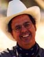
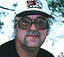

Founding Members |
|
Bill Grimes, Professor of Biochemistry
http://biology.arizona.edu/wjg/
Bill came to the University of Arizona in 1971. In 1985 he became Head
of the Undergraduate Program in Biochemistry, and was asked to create a
new Introductory Course in Biology. Working first with Dr. Marty Hewlett
and joined the second year by Dr. Rick Hallick, he has continued the development
of Biology 181 as an introductory course for majors and non-majors. He
enjoys the intellectual stimulation of his cancer research, but regards
teaching and advising as his most important activities.
Bill Retired from the University of Arizona in 2008 |
| |
|
|  |
Rick Hallick, Professor of Biochemistry
Rick has been teaching undergraduate biology and biochemistry since 1973.
He has a strong interest in using technology to enhance undergraduate education.
Rick is co-founder and faculty supervisor of the Biology Learning Center,
and also is active in designing MacMolecule2,
molecular graphics software for undergraduate education. He is the author
of 22 Activities/Problem Sets at The Biology Project, including the material
on Mendelian genetics, human genetics, photosynthesis, ABO blood type,
Red/Green Colorblindness, molecular genetics and DNA forensics. Rick is
currently leading an initiative to create a web-based environment for use
by collaborators in translating The Biology Project into other languages.
Rick retired from the University of Arizona in 2007 |
| |
|
|  |
Ken Williams, Principal
Systems Analyst / Technologist
Ken wrote his first computer program in 1964, and joined The Department
of Molecular and Cellular Biology at The University of Arizona in 1984
to support computational biology. In 1995 Ken teamed up with Rick Hallick
and Bill Grimes to help develop and deploy the online educational activities
that have become The Biology Project. His contributions include systems
design and administration, database and middleware programming and maintaining
the technological underpinnings of our web services.
Ken retired from the University of Arizona in 2006 |
| |
|
| |
|
Development Staff |
|
The Biology Project is no longer actively developed. Page errors are fixed as we learn about them, but no new material will be added to the site.
To notify us about problems with the site, please contact the current webmaster |
| |
|
| |
|
| |
Collaborators for Chemicals & Human
Health section |
|
Joanna K. Norman, Program Coordinator
norman@pharmacy.arizona.edu
Joanna was the Program Coordinator for the Community Outreach and Education
Program at the Southwest
Environmental Health Sciences Center. The current program coordinator
is Marti Lindsey, lindsey@pharmacy.arizona.edu. |
| |
|
Collaborators in Spanish Translation |
|
Director - Mentor
Dr. Carlos Enrique Pelozo
Doctor en Ciencias Veterinarias
Facultad de Recursos Naturales
Univeridad National de Formosa
Formosa, Argentina
|
|
Traductor
Dr. Adolfo Rossiter
Medico Veterinario
Facultad de Recursos Naturales
Univeridad National de Formosa
Formosa, Argentina |
|
Traductor
Kenna Mills and Julio Miranda
El Proyecto Enlaces
University of Chile
Santiago, Chile |
| |
|
Former Team Members |
| |
Nathan Hartvigsen, Web Education
Specialist
Nathan's work focused on graphics and animations for The Biology Project
content. He was also the managing editor of the Math Awareness Week web
sites for 1998 and 1999. |
| |
Robert Hershoff, Application Systems
Analyst, Senior
Robert's duties included technical support for the Biology
Project. |
| |
Jennifer Katcher, Senior Media Specialist
Jennifer developed online biology learning materials and was involved with
the instructional design of The Biology Project. |
| |
Madeleine Lapointe, Senior Instructional
Specialist
Madeleine's primary concern was with the instructional design of The Biology
Project. Drawing from the cognitive learning theories, she transformed academic
content provided by content experts into courseware modules. |
| |
Bjorn Meyer, Biochemistry Computing
Student Assistant
Bjorn assisted in maintaining the Biochemistry and Molecular Biophysics
Department's computer infrastructure. |
| |
Michael Wagenheim, Web Designer, Web Application Developer
|
| |
Denice Warren, Senior Instructional
Specialist
Denice coordinated development of The Biology Project's web site from its
inception to 1999. |
| |
|
Former Student Interns |
|
Darin Goss, Undergraduate intern
Darin was an undergraduate at the UA majoring in Molecular & Cellular
Biology. Darin transferred to the UA from Scottsdale Community college
in the Fall of 1996 and began a year-long internship with The Biology Project. |
|
Marcia Underwood, Graphic Designer
Marcia was The Biology Project's first graphic design artist (1996-1997).
She also contributed to the content of the site, designing problem sets
and research summaries. She is an undergraduate at U of A studying Graphic
Design. |
| |
|
Other contributors |
|
Karin Dixon and Elizabeth
Willott have both provided valuable feedback to make The
Biology Project a better web site. Special thanks to both of them! |